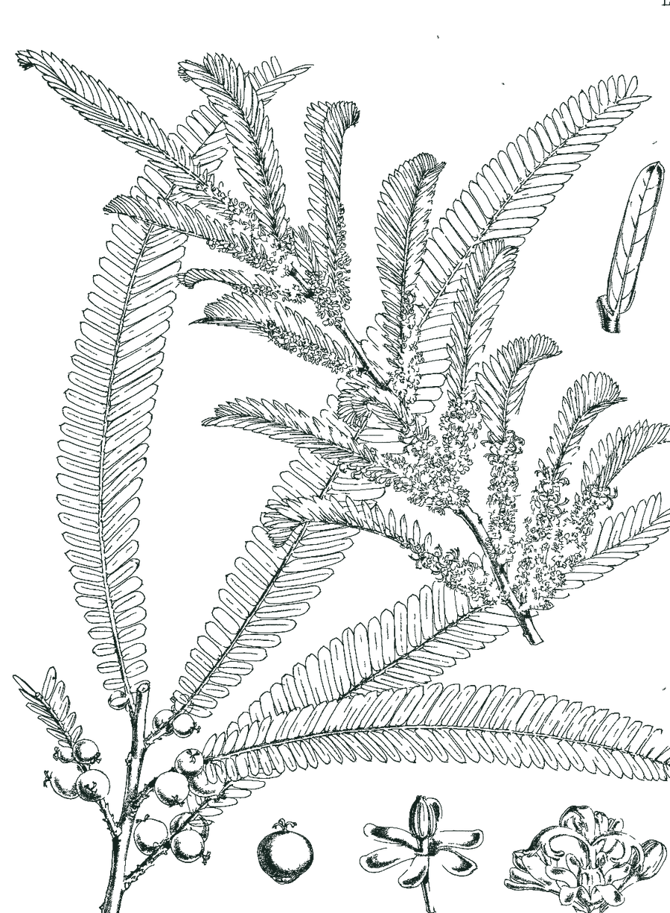
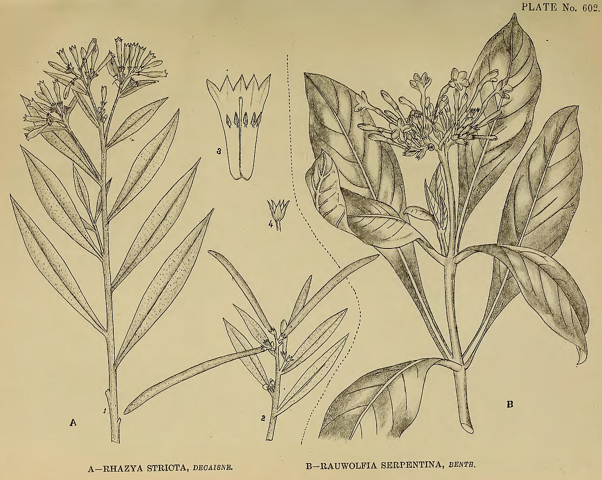

Medicinal plants, stress-tested
Where South Asia's climate may still suit the plants behind traditional formulas in 2041–2060.
See what the climate takesResearch prototype. Model projections, not forecasts, medical advice or Red List assessments. Nothing here says a plant is safe, or that one plant can replace another.

What the climate takes
A formula is only as safe as its ingredients
A formula needs every plant in it. The sourcing footprint is the area where all of them find suitable climate together, so it can shrink faster than any single range. It measures climate suitability, not actual supply.
Find what can hold where you are
Select any block to see its priority plants. "Retained" means at least 4 of 5 climate models keep the block suitable. Threatened plants are left out of this map entirely, to avoid helping illegal collection.
Every plant, and how far to trust it
Loss is the share of today's modelled suitable area not retained under SSP5-8.5. A low value does not mean a plant is safe: models cannot see harvesting, habitat loss or heat limits beyond sampled conditions.
We tried to prove ourselves wrong
Which unassessed plants should experts review first?

What this cannot tell you
Limits of the model
- Climate suitability is not presence, abundance or supply.
- Occurrence data reflect where people look, and many records are cultivated plants not flagged as such.
- No soil, land use, harvest pressure, dispersal or biotic interactions are modelled.
- "No checklist record" does not mean never assessed: national assessments may exist.
- Compound data show what has been reported, and absence is not evidence of absence.
Responsible use
- Threatened species have no public map, location list or share in any map layer.
- Public layers stop at 0.5°, and no occurrence coordinates are published.
- Formulas come from published literature only. No community-held knowledge is used.
- Local and Indigenous knowledge holders should guide any field use, following the CARE Principles.
Data problems we found and fixed
- A GBIF status endpoint missed real assessments, so status was rebuilt from the IUCN archive.
- A synonym wrongly made ashwagandha Critically Endangered. Synonyms now pass on status only for genus transfers.
- An open-licence filter removed most records of threatened Himalayan plants.
- A record cap returned clustered samples, so common species are now sampled by tile.
- Missing future climate cells were silently passed to a model. They are now excluded.